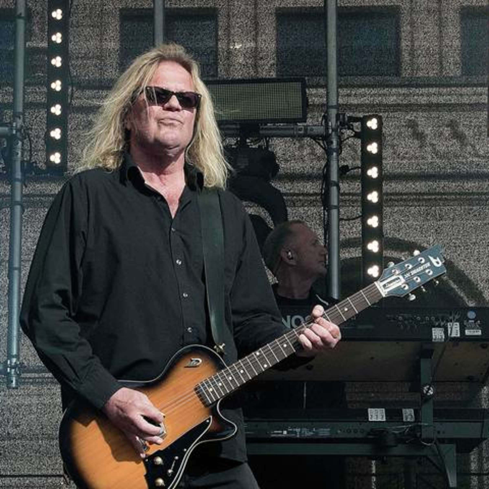

Aron has been a member of the group since their debut in 1982. Although musically well complemented with his fellow band member Stefan Zauner (the two have a writing partnership that continues to this day), Aron's stage presence contrasts the rest of the band, being significantly taller and often written about on fan sites as a 'blonde giant'.
